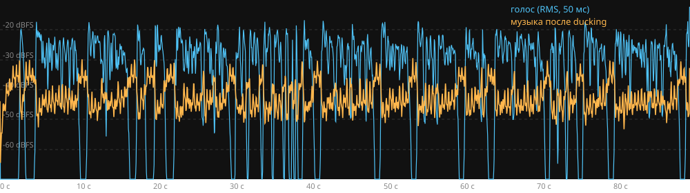

Аудиокнига-студия
Книга → многоголосый аудиоспектакль: персонажи и их голоса, эмоции, фоновая музыка по сценам с автоматическим приглушением (ducking), нормализация −16 LUFS, экспорт MP3/M4B. Исходный код на GitHub.
Демо: А. П. Чехов, «Хамелеон» (1884), полностью
Текст найден автоматически по запросу «Хамелеон Чехов» в Викитеке (общественное достояние). 6 мин 45 с, 6 голосов, 4 музыкальные сцены. Сгенерировано командой python scripts/demo.py "Хамелеон Чехов" --edits scripts/demo_hameleon_edits.json.
Проверка ducking (музыка не перекрывает голос)

Первые 90 с: голубая линия — дорожка голоса, оранжевая — музыка после сайдчейн-компрессора. Во время речи музыка опускается, в паузах поднимается до −12 dB от голоса. Метрики считает scripts/verify_ducking.py по стемам (кадры 50 мс) и по итоговому MP3 (EBU R128).
Голоса в демо
| Роль | Голос | Движок |
|---|---|---|
| Рассказчик | Светлана | Edge TTS (онлайн) |
| Очумелов, полицейский надзиратель | Айдар (бас, −3 полутона) | Silero (локально) |
| Хрюкин, золотых дел мастер | Евгений (хрипловатый) | Silero |
| Елдырин, городовой | Евгений | Silero |
| Прохор, генеральский повар | Айдар (тенор) | Silero |
| Голос из толпы | Евгений (юноша) | Silero |
Атрибуция реплик в демо — rule-based (без LLM): 30 из 36 реплик автоматически верно (83 %), остальные поправлены вручную через тот же механизм, что и в интерфейсе «Правка атрибуции» (scripts/demo_hameleon_edits.json). С ключом LLM (OpenAI-совместимый API) атрибуция и эмоции уточняются моделью.
Музыкальные сцены
| Время | Настроение |
|---|---|
| 0:00 – 1:57 | action |
| 1:57 – 4:40 | tension |
| 4:40 – 5:32 | calm |
| 5:32 – 6:45 | light |
Музыка — процедурно сгенерированные лупы (CC0, scripts/generate_music.py), между сценами — равномощные кроссфейды 3 с.
Эта страница — статическое демо на GitHub Pages. Сам сервис (API + веб-интерфейс) запускается локально или на сервере — см. README.